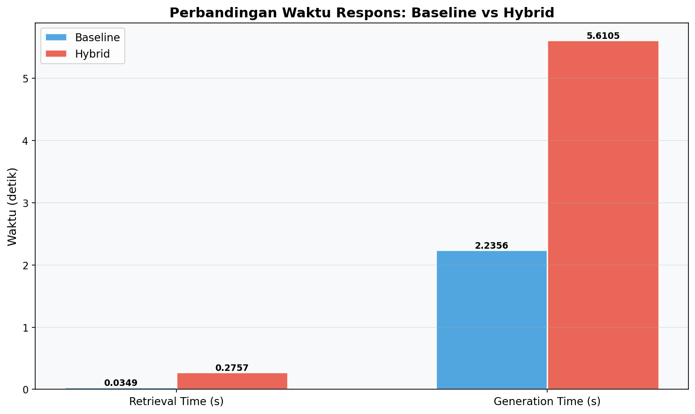
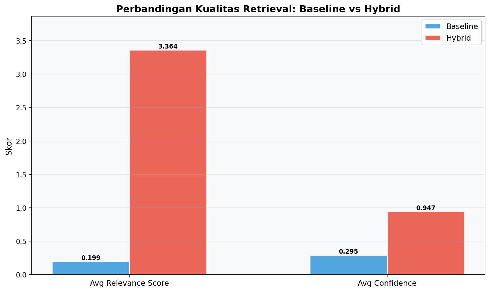
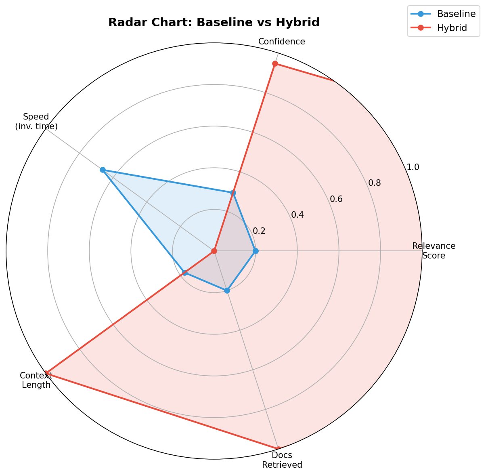
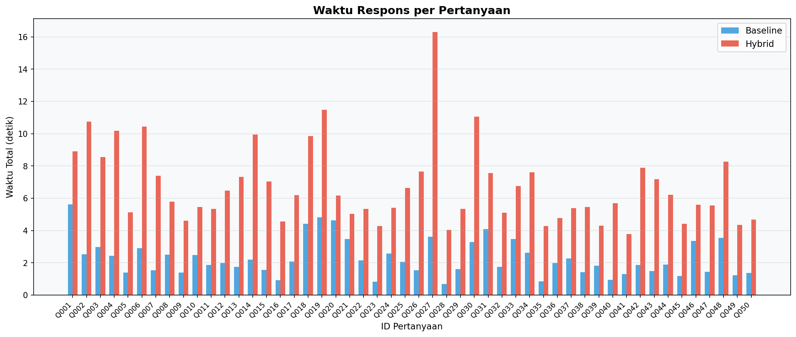

| Metrik | Baseline | Hybrid |
|---|---|---|
| Success Rate | 100.0% | 100.0% |
| Mean Reciprocal Rank (MRR) | 0.2200 | 0.4777 |
| Precision@K | 0.0440 | 0.2440 |
| Recall@K | 0.0440 | 0.2440 |
| Faithfulness (RAGAS) | 0.0000 | 0.0000 |
| Answer Relevancy (RAGAS) | 0.0000 | 0.0000 |
| Context Precision (RAGAS) | 0.0000 | 0.0000 |
| Avg Relevance Score (Raw) | 0.1985 | 3.3641 |
| Avg Confidence | 0.2946 | 0.9470 |
| Avg Documents Retrieved | 1.0 | 5.0 |
| Avg Retrieval Time (s) | 0.0349 | 0.2757 |
| Avg Generation Time (s) | 2.2356 | 5.6105 |
| Avg Total Time (s) | 2.2715 | 6.7471 |
| Avg Answer Length (chars) | 405 | 546 |
| Avg Context Length | 884 | 5025 |



